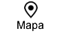

BARCELONA
IMPRESCINDIBLES
Sagrada Familia
Museo Nacional de Arte de Cataluña
Puerto Olimpico
Parque Guell
Museo Picasso
Casa Batlló
La Pedrera
Las Ramblas
Barrio Gótico
La Boquería
Hospital Sant Pau
OTRAS VISITAS
Plaza Real
Santa María del Pi
Santa María del Mar
Plaza del Rey
Catedral
Casa del Arcediano
Plaza de San Jaime
Parq de la cuidadela
Port Vell
Tibidabo
Fossas de les moreres
Monasterio de Pedralbes
Camp Nou
Les Drassanes Reials
Palau Sant Jordi
Museo de Historia de Barcelona
Pabellón de Barcelona
Museo de historia de Catalunya
Fundación Joan Miró
Fuente magica del Montjuic
Castell de Montjuic
Jardin Botánico
Casa Museo Gaudí
Palau de la Música
Museo del Diseño
Teatro griego
Arco del Triunfo
Palau Güell
Plaza de San Felipe Neri
